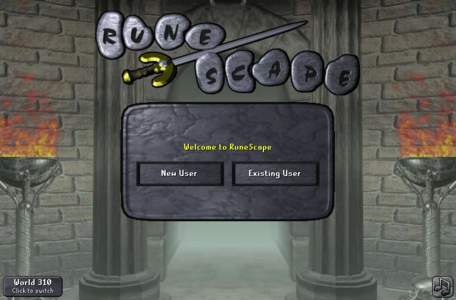
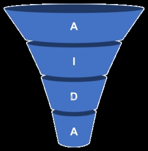
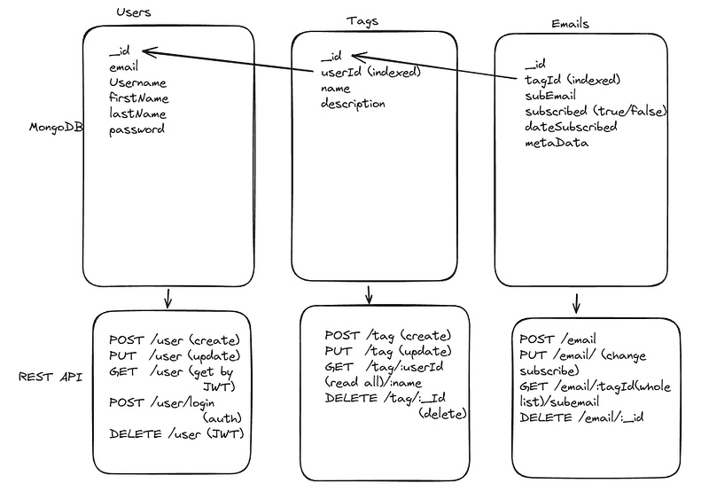

Complexity estimation is an essential tool to writing good code.
At the beginning of all Computer Science university programs one of the first things we learn is complexity.
Why is it so important?
Why would every course in university focus on this concept?
I mean it is not even coding.
But wait a minute here, don't go. If you hear a lecture on this topic or know nothing about it, listen and learn about complexity.
Complexity forms the basis of good code.
I would say there are 4 types of complexity to consider..
- Legibility of code (is it maintainable?)
- Code size (is it a lot of code?)
- Space complexity(How much memory?)
- Time complexity (How long will it take)
As a developer we are master craftsmen. Our entire goal should be to refine these 4 dimensions of code.
These metrics define how good of a programmer you are.
Can you consistently create code with optimal complexity?
Is your solution exactly what you set out to do while keeping these 4 principles?
What makes an advanced developer advanced is their ability to create the right solution in optimal complexity in large quantities.
The end goal is Quality X Quantity.
Legibility of code
Computer Science programs tend to skip the first two types of complexity; maintainability/legibility and code size.
They hyper focus on space and time.
This is a bit of a shame, as we need to talk about principles of clean code. What creates maintainability and how verbosity decreases as you advance.
Illegibility and large code sizes are traits of beginner programmers.
As you become a better programmer the amount of code you produce, the legibility of the code and smaller code sizes improve.
There are 3 ways to get cleaner code, they are (in order of importance):
- Write code
- Rewrite code
- Learn clean code principles
Books like clean code by Robert Martin, Udemy courses on writing clean code are great.
But nothing beats simply writing code.
Time under writing code is the greatest way to make you a cleaner coder.
It has to be intentional. As you write you must be thinking, what is the most maintainable way to do this?
Refactoring AKA rewriting your code periodically is a major part of writing clean.
Clean code principles are essential as well.
All three ways I mentioned are essential for your optimal growth in creating clean code.
I would always recommend once you get a a year of writing/rewriting code, you should learn clean code principles.
Once you hear some principles, it should become intentional. The best way to learn them is to reflect on how to use them in all of your programming.
For example, code in the affirmative is a principle of using if statements. Take a look...
if(condition == true) # affirmative
doSomething();
else
doSomethingElse();
if(condition != true) # Not affirmative
doSomethingElse();
else
doSomething();The top condition is an affirmative statement, we are checking if something is true.
The general statement is to put all your true conditions at the top of your if statements.
When you hear this in a lecture or Udemy course, you should intentionally reflect on how you write code.
Then, while writing code you should ingrain that principle into all of your writing.
Clean code principles are best learned through placing it into the muscle memory of your code writing.
Another principle is avoid else statements where possible. Let's try to make that a habit, like this:
if(condition == true) {
doSomething();
return;
}
doSomethingElse();According to Robert Martin and those clean code gurus on YouTube, this example would be considered a more legible statement.
Once you hear a principle you add it to all your implementation and follow through.
It is deliberate inclusion as you write from the start of hearing the principle.
And yes, the uninitiated to clean code principles will criticize your code.
I have had people criticize my code because I didn't "use all the functions of the language" like else statements, adding too much abstraction or removing nesting (another principle).
What was absolutely hilarious, as they were criticizing my code they knew exactly what every part of my code was about and why I put it there.
I sat silent, let them finish and gladly noticed they had no problem reading it.
I remember the days when no one could read my code. And now, even in criticism coders know exactly what I am writing by just looking at it.
Here are two great series for learning clean principles and then afterward intentionally applying them.
I recommend watching these and keeping notes on clean code in a note taking app like Codex, referring and intentionally adding them to your writings.
The majority of readers of your code will thank you...
Robert Martin lecture series: https://youtube.com/playlist?list=PLmmYSbUCWJ4x1GO839azG_BBw8rkhzOj&si=62hFCG6jZdsX-5Hw
Udemy course: https://www.udemy.com/share/103Mgc3@-9oNbuLgT8N1ohBzIQJ3qzPIQqZ5qhbwmLrICcruukfkmDpLrDRW05ceN1_fL7BM/
Code size
There is an ironic trend to code size and advancement as a coder.
Beginner programmers tend to write the most complex and largest code bases.
Most people will think the large code size and complexity is a trademark of an advanced developer.
Quite the contrary.
They look at the simple solution and think the developer was a beginner.
The truth is the most advanced programmers tend to write the most simple and small but effective code bases.
The beginner and advanced coder will come up with a similar solution.
But looking at the code we see a huge difference.
To be fair, I am a bit ecumenical about clean code and code size.
I am in favor of writing dirty at the beginning of your programming journey.
There is no other way to write when you first start.
The principles of clean code and code size are out of your reach until you understand coding in greater depth.
And the fact of beginners being able to solve any problem at any complexity is the key sign of talent.

Anybody can clean up their code and reduce code size. It is a non-issue as it can be taught.
It just takes principles and time under implementation.
But, for your first year if you can solve difficult problems, no matter how complex the code, that is a key sign you have raw talent (as opposed to earned talent).
The talent of a beginner developer is not measured in the complexity of his code, but their ability to solve problems at all.
Perhaps one of the most talented developers I ever came across was the creator of what is known as the Matrix base in the RSPS (Runescape private servers) community.
English was his second language, he was in his first few years of programming.
He was able to reverse engineer the server (in a team) for the video game Runescape in a matter of months, learning sockets and principles of programming at the same time.
But, by golly, was his complexity just horrendous.
Everything was misspelled (he barely knew English), the code size was humongous with 1000s of lines per code file, nothing was legible and the time/space complexity was wack.
But heck, I was able to start up the Runescape client and play the game just like the real one.
Now that is raw talent. Just because a beginner is writing high complexity code doesn't mean they suck.
Highly complex code is actually a requirement at those lower levels.
You need to learn to do it at all first and foremost, then learn to do it clean.
Years later he created Matrix Version 2 and Version 3 and more and more versions of Matrix. He got more and more prolific and cleaner with smaller code sizes.
Anybody can hone their skill at complexity but raw talent is inherently what you are born with and that is the key sign.
And just a qualifier here, raw talent is different than earned talent. Just because you don't start with raw talent doesn't mean you wont be able to catch up to someone like DragonKK (a Matrix creator) as is his online name.
When I mention raw talent I am talking about the first 3 months of programming. Beyond 3 months - 1 year you can start passing people up with raw talent with enough passion.
But yes, your code size will naturally decrease as you create highly complex code then rewrite it.
The fact you can write it at all is an indicator of talent, earned or raw.
How to produce more code
This is tricky. I will tell you the secret up front.
The secret to producing massive amounts of code is to design how you will create the code before you do it.
There are two ways this is done, either intuitively or by written design.
Intuitively
When we start programming this is our only option.
We have to create or read the problem then envision the solution as we write it.
The more advanced you are the farther ahead you can envision.
Forecasting the entire code base ahead of time is the secret to producing massive quantities.
The only way to forecast is to have done it before.
Naturally as you solve more and more similar problems your forecasting ability will improve and naturally so will your output.
If you get to a certain point you can begin to do an even greater thing than intuition.
Something that will boost your output to even greater heights and that is writing a system design...
By system design
In backend development this is known as system design or code layout.
In front end development it is known as a website design or mock up in a program like Figma.
In graphics programming it is a write out of features and render design.
In machine learning it is an architecture design and intended output.
I took a bit of a stretch with graphics programming and machine learning. I am sure there is an actual official way to do code/model designs in those fields. But, I wanted to give you the general idea.
The secret is to design how you are going to code it before you even touch the code.
The entire code base should be visualized before you even write a function.
This is the way its done at those much higher levels.
It is what a code architect does.
Here is the tricky part. You have to have intuitively coded something similar many times to really be able to do this.
Using this GOAT method is like a chicken and egg problem.
You need to design how you are going to write the code. But you need to have done it before.
So, how in the world does that work?
Well, you just start off by doing intuitively the first time. With that Matrix source I mentioned earlier DragonKK and the team of Matrix had to do it once.
It was, for many on the team, the first computer networking code source they ever made.
After doing it once they could see how to better make a system design.
After doing it intuitively a few times they can outline the networking packets on something like Excalidraw for outlining, structure the layers of abstraction and create a general layout of the code source before even touching the code.
You can spend an entire day making a system design for the whole app, then save weeks to months on actually writing the code.
The fact that you know what you are writing before you write it is the big secret to writing enormous amounts of code.
But when we first start we have to write intuitively. After some time we can start on designing the code base beforehand.
Though in most cases we forecast intuitively, it will just depend on our ability to do that in the moment.
With implementation it will naturally extend into the future.
Anywho, I hope you learned something...
Happy coding!
Resources
Robert Martin lecture series: https://youtube.com/playlist?list=PLmmYSbUCWJ4x1GO839azG_BBw8rkhzOj&si=62hFCG6jZdsX-5Hw
Udemy course: https://www.udemy.com/share/103Mgc3@-9oNbuLgT8N1ohBzIQJ3qzPIQqZ5qhbwmLrICcruukfkmDpLrDRW05ceN1_fL7BM/
Excalidraw for system design: https://excalidraw.com/